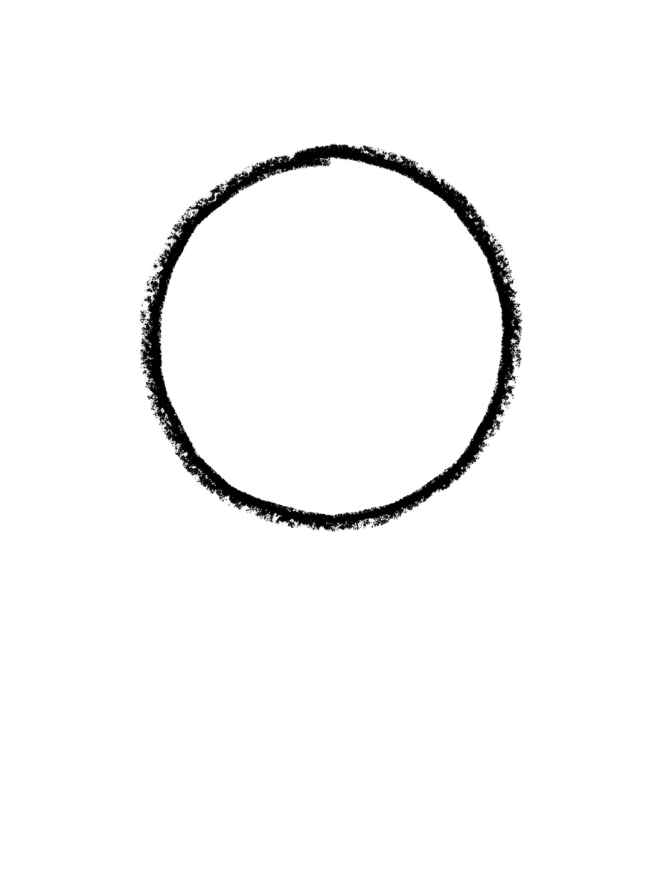
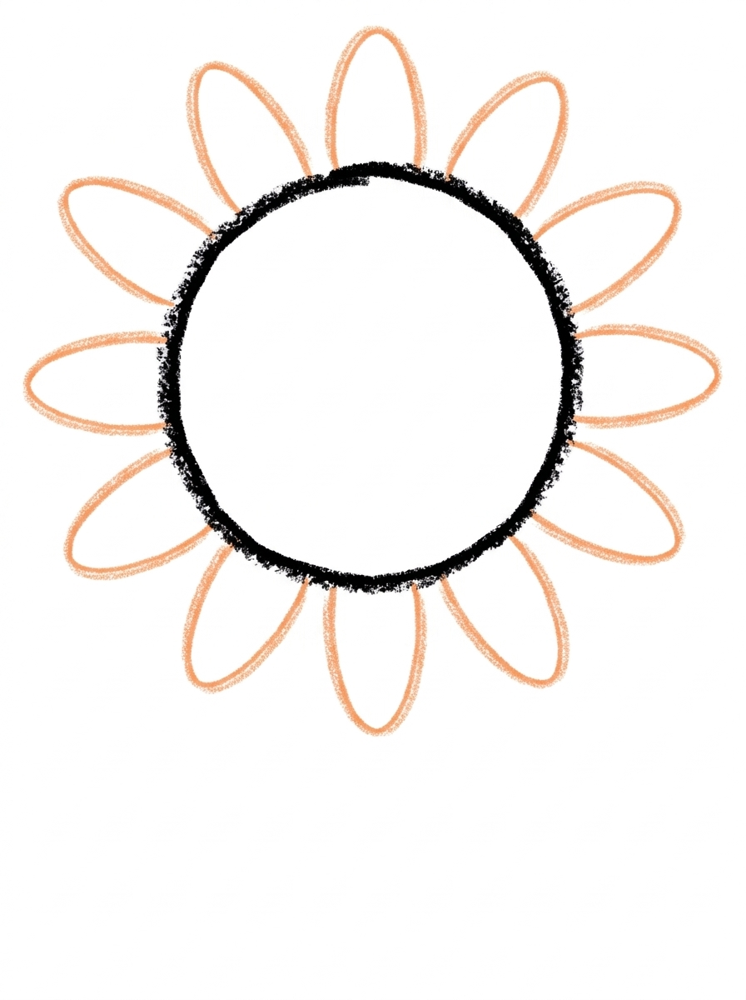
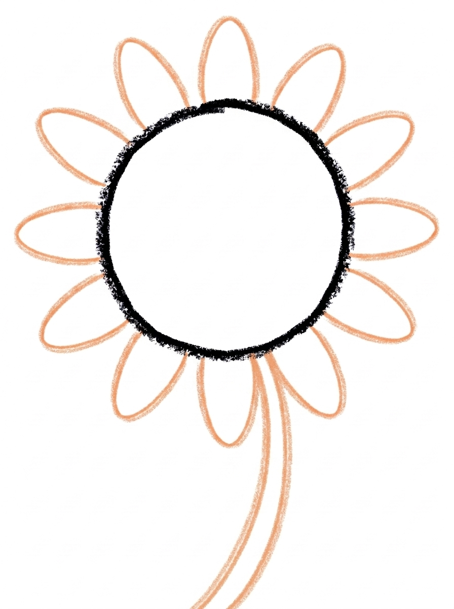
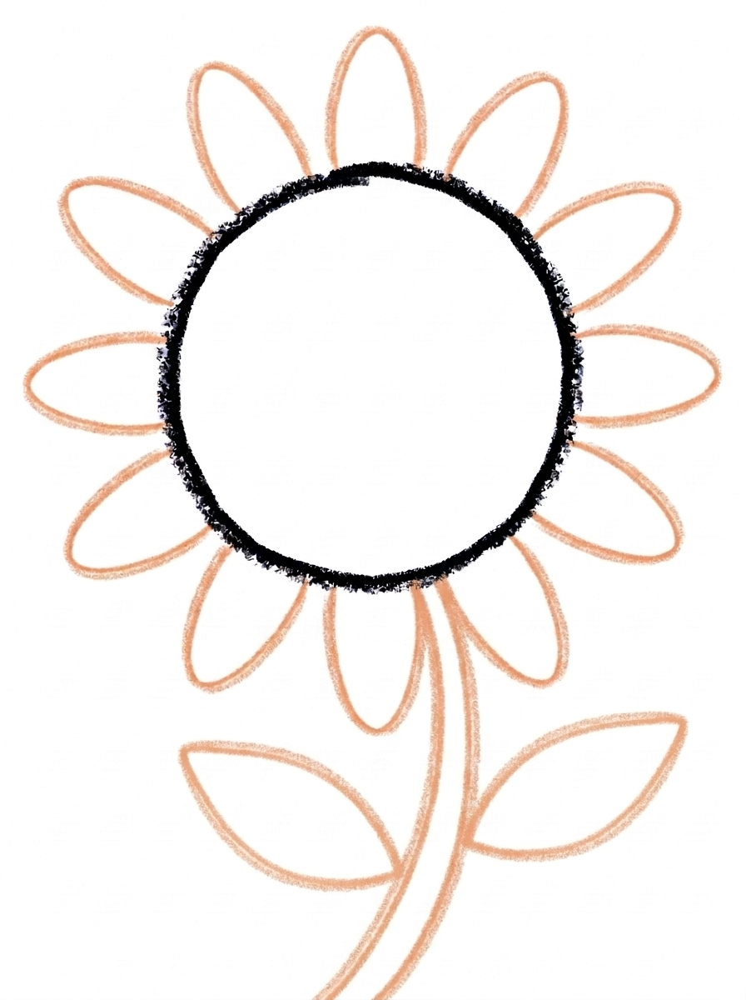
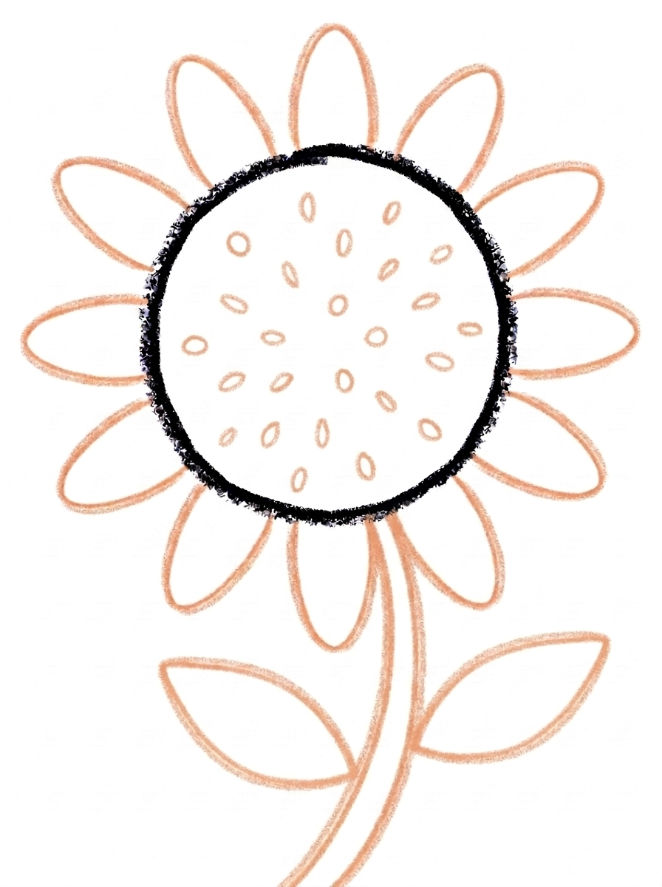

Sunflower Drawing for Kids How to Draw A Sunflower in 6 Easy Steps
Quick Answer
Draw one big circle for the center, ring it with long oval petals, then add a long curved stem and two pointed-oval leaves. Dot in lots of little seeds inside the circle, then colour the petals golden yellow. Made for ages 3 and up — no signup needed, just print and draw.
At a Glance
- Subject: How to draw a sunflower
- Ages: 3+
- Steps: 6 steps
- Time: ~15 min
- Difficulty: Easy
- Supplies: Paper, crayons
Sunflowers are tall, cheerful and wonderfully simple to draw — one big circle, a ring of petals and a long stem. Kids love how fast the flower appears: after just two steps it already looks like a sunflower, and the seed dots in the middle are pure relaxing fun to fill in.
✏️ Draw Your Sunflower in 6 Easy Steps
One step per box — this step by step sunflower drawing shows each new part in a different color so kids can see exactly what changed.
Step 1: The Center

Draw one big circle in the upper part of your paper. This is the sunflower's center.
Step 2: The Petals

Draw a ring of long oval petals all around the center circle, each petal touching the circle.
Step 3: The Stem

Draw one long curved stem starting at the bottom of the center circle and running down to the bottom of your paper.
Step 4: The Leaves

Draw two pointed-oval leaf shapes on the stem, one on each side, each leaf touching the stem.
Step 5: The Seeds

Draw lots of small dots scattered inside the center circle, all staying inside the circle. These are the sunflower's seeds.
Step 6: Color It In

Color your sunflower! Golden yellow for the petals, dark brown for the center, black-brown for the seed dots, and green for the stem and leaves. Great drawing!
📊 Sunflower Drawing by Age
Every age can join in — just adjust the job.
| Age | What they can do | Tip |
|---|---|---|
| 3-4 | Draw the big center circle and dot in the seeds — dotting is a favourite at this age. | Draw the petal ring hand-over-hand the first time, then let them add extra petals anywhere they like around the circle. |
| 4-5 | Draw the ring of long oval petals and the long curved stem on their own. | Remind them the stem starts at the bottom of the circle — petals first, then the stem grows down to the bottom of the page. |
| 6+ | Complete all six steps independently, including the two leaves and neat seed dots. | Challenge them to draw a row of sunflowers at different heights, like a real sunflower field. |
🖨️ Download Your Free Sunflower Drawing Printable
The printable lays out all 6 steps one per box, big enough for little hands — kids draw right alongside each step.
⬇️ Open Free Printable 🖨️ Print🎁 Free printable for ages 3+
🌻 Tallest Sunflower Contest
Sunflowers are famous for growing taller than a house, so make it a game: everyone draws the sunflower using the six steps, then keeps going — a longer stem, a bigger circle, more petals — and the family votes on which finished sunflower looks the tallest and sunniest. Tape the entries side by side on a wall to make an instant sunflower field.
What You'll Need to Draw A Sunflower
You need paper, a pencil and crayons or markers. For Step 6 keep golden yellow ready for the petals, dark brown for the center, black-brown for the seed dots, and green for the stem and leaves. Tall paper — or two sheets taped together — is fun for this one, because a sunflower's stem is meant to be long.
What They're Learning
This tutorial practices the circle, the long oval (used over and over for the petals), the pointed oval for the leaves, and a long curved line for the stem. Repeating the same petal shape all the way around the circle builds pattern and rhythm, and the seed step practices control — lots of small dots that all have to stay inside the circle.
Make It Yours
Once the sunflower is drawn, try: a smiling face in the center instead of seeds, petals in orange or even rainbow colours, a whole row of sunflowers at different heights, or a bee and a butterfly visiting the flower. A night sunflower with a dark blue background is a fun twist too.
🛒 Our Favorite Drawing Supplies
These are the supplies we reach for in our own home — washable (because kids), quality paper, and enough colors to avoid fights.
As an Amazon Associate, MomYouNeedThis earns from qualifying purchases — at no extra cost to you.
💡 Sunflower Drawing Tips for Parents
Step 2 is where sunflowers succeed or wobble: the petals need to touch the center circle and go all the way around it. If your child leaves a gap at the bottom, that is exactly where the stem will attach in Step 3, so the drawing usually fixes itself — no need to start over.
Leave the seeds for when energy is high or save them for a calm moment — Step 5's dots are the most meditative part of the tutorial and a lovely way to slow down. There is no right number of seeds; a full, busy center looks best.
✏️ Sunflower Drawing Step by Step
This sunflower drawing works from the flower head down: center circle first, petals second, then the stem and leaves that hold it up, seeds near the end, and colour last. Kids see a recognisable sunflower after only two steps, which keeps motivation high for the rest.
Follow the printable one step at a time. Each step adds exactly one part, and every part is a shape your child has likely drawn before — a circle, an oval, a curve.
Because the flower head sits in the upper part of the page, remind your child to leave room below for the long stem. That one piece of planning is the only tricky part, and the printable's pictures show it clearly.
See free sunflower printable for more.
✏️ One Shape Per Step, Six Steps Total
The exact order: Step 1 is one big circle in the upper part of the page — the sunflower's center. Step 2 rings it with long oval petals, each one touching the circle. Step 3 draws one long curved stem from the bottom of the circle down to the bottom of the page.
Step 4 adds two pointed-oval leaves on the stem, one on each side. Step 5 scatters lots of small seed dots inside the center circle. Step 6 colours the petals golden yellow, the center dark brown, the seeds black-brown, and the stem and leaves green.
Six steps, and only two kinds of petal-like shapes to learn — long ovals around the flower and pointed ovals on the stem. Repeating one shape many times is exactly how young artists build confidence.
See free sunflower printable for more.
🌻 Why Kids Love Sunflowers
Sunflowers are the giants of the garden — real ones can grow taller than a grown-up, and their heads turn to follow the sun. That makes this drawing a natural lead-in to planting a seed in a cup and watching it grow.
The big yellow flower head is also one of the most forgiving subjects in art: petals can be long, short, even or uneven, and the flower still reads instantly as a sunflower. There is almost no way to get it wrong.
Try drawing one sunflower per family member and taping them in a row from shortest to tallest. It becomes a growth chart, a height joke and a piece of wall art all at once.
See free sunflower printable for more.
❓ Sunflower Drawing FAQs
What is the easiest way to draw a sunflower?
Draw one big circle, ring it with long oval petals, then add a curved stem and two leaves. Dot seeds inside the circle and colour the petals golden yellow. This tutorial follows exactly that order in six steps.
What age is this sunflower drawing for?
It is made for ages 3 and up. Younger kids can draw the circle and petals with help and love dotting the seeds, while older children can complete every step, including the leaves, independently.
What supplies do we need to draw a sunflower?
Paper, a pencil and crayons or markers are all you need. For Step 6, have golden yellow, dark brown, black-brown and green ready.
Is the sunflower drawing printable really free?
Yes — every printable on MomYouNeedThis is 100% free to download and print. No signup, no payment, just tap the download button.
How do I print the sunflower drawing tutorial?
Open the PDF and print at 100% scale, not 'fit to page', so the step pictures stay their designed size. Keep the sheet next to your child's paper so they can copy one step at a time.
How many petals should the sunflower have?
There is no set number — just keep adding long oval petals until the ring goes all the way around the center circle with no big gaps. Most kids land somewhere between ten and sixteen petals.
Why does the tutorial draw the center before the petals?
The petals need something to attach to. Drawing the circle first gives every petal a clear starting point — each one touches the circle — which keeps the ring even and the flower round.
Can my child draw a sunflower face instead of seeds?
Yes, that is a popular variation: swap the seed dots in Step 5 for two eyes and a smile inside the circle. The rest of the steps stay exactly the same, and the result is a cheerful sunflower character.
📚 Keep Exploring
- ✏️ All 53 Drawing Tutorials 53 free step-by-step drawing tutorials for kids.
- 🌸 Flower Coloring Free printable flower coloring pages for kids.
- ✏️ Drawing Practice Free printable drawing pre-writing worksheet for toddlers.